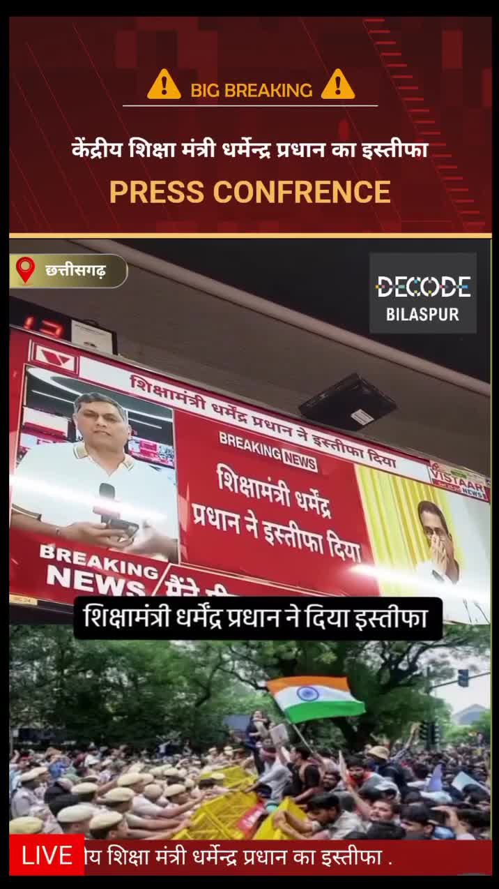

Bilaspur News Hub
1
EDUCATION
3
EVENT
8
GOVERNMENT
1
HEALTH
2
INFRASTRUCTURE
13
INSTAGRAM NEWS
16
NEWS
12
POLICE
1
SOCIAL
10
YOUTUBE VIDEOS
EDUCATION1

CG Wall · Published: Sat, 25 Ju | Scraped: 2026-07-25 16:45:18
Officials from the education department visited a primary school in Rani village, providing meals and snacks to students. The initiative aims to support children's nutrition and encourage school attendance.
EVENT3

CG Wall · Published: Sat, 25 Ju | Scraped: 2026-07-25 16:45:18
An angel was awarded an international crown, earning Bilaspur a prestigious global recognition. This honor highlights the city's growing cultural stature and pride.
G News Bilaspur · Published: 2026-07-25 | Scraped: 2026-07-25 16:45:18
The PRIME 25 JUL event is scheduled for July 25, marking a significant occasion in Bilaspur.
G News Bilaspur · Published: 2026-07-25 | Scraped: 2026-07-25 16:45:18
A 42-year-old woman from Bilaspur claimed the prestigious Mrs. India title at the pageant held in Delhi's Hotel Leela International. Her victory highlights the growing representation of older contestants in beauty pageants.
GOVERNMENT8

Nai Dunia Bilaspur · Published: Sat, 25 Ju | Scraped: 2026-07-25 07:58:14
सुप्रीम कोर्ट ने हाई कोर्ट के मुआवजा फैसले को पलट दिया, कहा कि हत्या साबित न होने पर मोटर दुर्घटना मुआवजा नहीं दिया जा सकता। यह फैसला आनंद अग्रवाल मामले में देयता के कानूनी मानकों को स्पष्ट करता है।

CG Wall · Published: Sat, 25 Ju | Scraped: 2026-07-25 07:58:14
एसएसपी बिलासपुर ने वाहन चालकों के लिए ई-चालान भरने की आसान ऑनलाइन प्रक्रिया साझा की, जिससे ट्रैफिक जुर्माने का भुगतान बिना किसी परेशानी के हो सके।

Nai Dunia Bilaspur · Published: Sat, 25 Ju | Scraped: 2026-07-25 09:33:01
A professor collapsed and died in a bathroom shortly after performing a song, shocking the academic community. The incident highlights the need for health safety measures during public events.

Lokswar · Published: Sat, 25 Ju | Scraped: 2026-07-25 11:03:17
Education Minister Dharmendra Pradhan submitted his resignation following protests by the CJP. The development comes amid ongoing political tension in New Delhi. The government is yet to announce a replacement.
Lokswar · Published: Sat, 25 Ju | Scraped: 2026-07-25 13:02:05
The District Advocates Association election concluded with a close contest for president and secretary, conducted peacefully. Voting was orderly and no incidents were reported.
Lokswar · Published: Fri, 24 Ju | Scraped: 2026-07-24 21:00:56
Kanker forest department in Pakhanjur arrested 11 smugglers trafficking live turtles, cracking down on wildlife smuggling. The operation underscores ongoing efforts to curb illegal wildlife trade.
Nagar Nigam Bilaspur · Published: 2026-07-25 | Scraped: 2026-07-25 20:42:01
The Bilaspur Municipal Corporation website experienced an internal execution error (yii\db\Command::internalExecute), disrupting online services temporarily. Officials are working to resolve the issue and restore normal functionality.
Nagar Nigam Bilaspur · Published: 2026-07-25 | Scraped: 2026-07-25 20:42:01
Another internal error occurred in the Nagar Nigam portal, this time involving yii\base\Module::runAction, affecting citizen access. Technical teams are addressing the problem to resume services promptly.
HEALTH1
G News Bilaspur · Published: 2026-07-25 | Scraped: 2026-07-25 16:45:18
Kota faces a renewed malaria outbreak with four children from Aropani-Nawadih testing positive. All patients have been referred to SIMS for treatment and further management.
INFRASTRUCTURE2

Lokswar · Published: Sat, 25 Ju | Scraped: 2026-07-25 07:58:14
राष्ट्रीय राजमार्ग-130बी पर बस और ट्रक की भिड़ंत से दर्जनों यात्री घायल हो गए, तीन की हालत गंभीर है। आपातकालीन सेवाओं ने घायलों को अस्पताल पहुँचाया।
G News Bilaspur · Published: 2026-07-25 | Scraped: 2026-07-25 16:45:18
The Food Operator conducted a quality inspection of the ongoing Grain ATM Annapurna project in Bilaspur. The visit ensures compliance with standards and timely completion of the facility.
INSTAGRAM NEWS13


The Instagram page @bilaspur_today_news announces the divine darshan of Mata Naina Devi on 25 July 2026, featuring the 'high mountain' shrine. Devotees can expect a special spiritual experience on this auspicious date.


चिंगराजपारा शराब भट्ठी के पास मारपीट, 4 आरोपी गिरफ्तार #BilaspurCrime #SarkandaPolice #ChhattisgarhPolice #LawAndOrder #CrimeUpdate #ActionAgainstCriminals #PublicSafety #BNS #BilaspurUpdates by @lokswar.in


मासूम बच्चों से हमाली, लोरमी के इस स्कूल से वीडियो वायरल #Education #Learning #SchoolLife #StudentSuccess #Teaching #Classroom #BackToSchool #EducationalResources #StudyTips #AcademicExcellence #mungeli_cg_ #governmentjobs #GovernmentScheme #governmentschooleducation by @lokswar.in


Details about Bilaspur Students & Public Protests 🪧 #bilaspurct #bilaspur #hamarbilaspur #bilaspurcity #bilaspurians by @bilaspurct


Ye hai Madras Cafè! ☕️🫓Agar ap khoj rahe hai bilaspur me amazing authentic tastes and flavours that makes you feel like you are in chennai! 😍 Location 📍Mungeli bypass, front of real heaven, near lakhme saloon, Mangla Chowk, Bilaspur.#bilaspurfoodie #authenticsouthindian #dosa #foodie #bilaspurcity by @whatsupbsp
Amid ongoing protests over alleged NEET paper leaks and irregularities, the Union Education Minister addressed the issue, assuring action and transparency. He urged students to remain calm.
In Bastar, a woman who had filed a rape case later married the accused, leading to the case being withdrawn. The unusual development has sparked discussion on justice and personal choices.

Calls for Education Minister Dharmendra Pradhan to resign have intensified in Chhattisgarh amid political turmoil. The demand gained momentum on social media with trending hashtags. The situation is being closely watched in Raipur.
Angel Choukse from Bilaspur represented Chhattisgarh at Mrs. India International and emerged victorious, earning the title of Mrs. India International Queen Alluring 20. Her win sparked celebration across the city and highlighted local talent. It is a proud moment for the region.
The ‘Samadhaan Maha Abhiyan’ is successfully addressing public grievances in Bilaspur, using the slogan ‘Your problem, our solution’. The campaign, launched with a CM helpline, aims to provide quick resolutions to citizens’ issues. It reflects the government’s commitment to responsive governance.
As part of the Jan Chetna Abhiyan, a school organized an awareness program with interactive sessions for students. The event aimed to educate pupils on civic responsibilities and community issues. It highlighted the role of youth in driving social change.


A significant theft occurred in Nehru Nagar, Bilaspur, where businessman Rajneesh Seth was targeted. Police at Civil Line station have launched an investigation to trace the stolen items.
NEWS16

Nai Dunia Bilaspur · Published: Sat, 25 Ju | Scraped: 2026-07-25 05:01:11
<img src="https://img.naidunia.com/naidunia/ndnimg/25072026/25_07_2026-e_challan_driving_license.jpg" />यातायात पुलिस के अनुसार फिलहाल ई-चालान पोर्टल पर सॉफ्टवेयर अपडेट का कार्य चल रहा है। ऐसे में वाहन चालक नेक्स्ट जेन ई-चालान के माध्यम से कंप्यूटर या लैपटाप से ऑनलाइन चालान शुल्क जमा कर सकते हैं।

Nai Dunia Bilaspur · Published: Sat, 25 Ju | Scraped: 2026-07-25 05:01:11
<img src="https://img.naidunia.com/naidunia/ndnimg/25072026/25_07_2026-fake_snakebite_compensation_racket.jpg" />सर्पदंश मुआवजा राशि हड़पने वाले संगठित गिरोह का बिलासपुर पुलिस ने पर्दाफाश किया है, जहां अत्यधिक शराब सेवन, जहरीले पदार्थ या दुर्घटना से हुई मौतों को सर्पदंश में बदलकर लाखों का फर्जीवाड़ा

CG Wall · Published: Sat, 25 Ju | Scraped: 2026-07-25 05:01:11
बिलासपुर… शिक्षा विभाग एक बार फिर विवादों में है। इस बार मामला ऐसे शिक्षक की बहाली और पदस्थापना का है, जिस पर मूल्यांकन कार्य के दौरान स्ट्रांग रूम प्रभारी से अभद्रता करने, मूल्यांकन प्रक्रिया बाधित करने तथा एक महिला शिक्षिका को व्हाट्सएप पर आपत्तिजनक संदेश भेजने के आरोप लगे थे। विभागीय जांच क

CG Wall · Published: Sat, 25 Ju | Scraped: 2026-07-25 05:01:11
बिलासपुर…बहुचर्चित सर्पदंश मुआवजा घोटाले में एफआईआर दर्ज होने और लगातार हो रही गिरफ्तारियों के बीच जिला प्रशासन ने पहली बड़ी विभागीय कार्रवाई करते हुए एक साथ तीन राजस्व कर्मचारियों को निलंबित कर दिया है। कलेक्टर संजय अग्रवाल के निर्देश पर जारी अलग-अलग आदेशों में तीनों कर्मचारियों को तत्काल प्र

Lokswar · Published: Sat, 25 Ju | Scraped: 2026-07-25 05:01:11
Prime Minister Narendra Modi's Instagram video achieved the highest number of views within 24 hours, setting a new world record. Meanwhile, CJP protesters and the government are scheduled to meet again today to discuss ongoing issues.

The Hitavada · Scraped: 2026-07-25 05:01:11
The Hitavada · Scraped: 2026-07-25 05:01:11
The Hitavada · Scraped: 2026-07-25 05:01:11

The Hitavada · Scraped: 2026-07-25 05:01:11
The Hitavada · Scraped: 2026-07-25 05:01:11
The Hitavada · Scraped: 2026-07-25 05:01:11
The Hitavada · Scraped: 2026-07-25 05:01:11
The Hitavada · Scraped: 2026-07-25 05:01:11
The Hitavada · Scraped: 2026-07-25 05:01:11
The Hitavada · Scraped: 2026-07-25 05:01:11

The Hitavada · Scraped: 2026-07-25 05:01:11
POLICE12
.jpg)
Nai Dunia Bilaspur · Published: Sat, 25 Ju | Scraped: 2026-07-25 07:58:14
छत्तीसगढ़ हाई कोर्ट ने पिता की याचिका खारिज कर दी, सौतेली बेटी से बलात्कार के मामले में 20 साल की जेल की सजा को बरकरार रखा। यह फैसला ऐसे गंभीर अपराधों के लिए कड़ी सजा को दर्शाता है।

CG Wall · Published: Sat, 25 Ju | Scraped: 2026-07-25 07:58:14
बिलासपुर के चिंगराजपारा में शराब की दुकान के पास हुई मारपीट से दहशत फैल गई, चार उपद्रवियों को गिरफ्तार कर जेल भेजा गया।

Lokswar · Published: Sat, 25 Ju | Scraped: 2026-07-25 11:03:17
Raipur police uncovered an inter‑state drug trafficking ring linking Odisha and Raipur, arresting a bus driver suspected of transporting narcotics. The operation marks a major crackdown on regional drug networks. Further investigations are underway to trace other accomplices.

Lokswar · Published: Sat, 25 Ju | Scraped: 2026-07-25 13:02:05
Police solved a major loot case within 48 hours, arresting four adult suspects and four minors in Devarhat village, Mungeli district. The swift operation highlights effective investigation.
Lokswar · Published: Sat, 25 Ju | Scraped: 2026-07-25 13:02:05
A reported multi‑crore theft turned out to be a hoax; police recovered goods worth only 3‑4 lakhs and placed three minors in custody. The investigation revealed the claim was false.

CG Wall · Published: Sat, 25 Ju | Scraped: 2026-07-25 16:45:18
Hiri police intercepted a suspect transporting illicit liquor concealed in a scooter's trunk during the ongoing anti-liquor drive. The seizure underscores law enforcement's efforts to curb illegal alcohol trade.

CG Wall · Published: Sat, 25 Ju | Scraped: 2026-07-25 16:45:18
Bilaspur police launched a new beat system deploying 48 motorcycles to enhance visibility and response, aiming to improve law and order and deter crime. The initiative reflects a shift toward proactive policing.

CG Wall · Published: Sat, 25 Ju | Scraped: 2026-07-25 18:49:14
A minor girl was lured with marriage promises and abducted by a man. Sitapuri police tracked and arrested the culprit, bringing him behind bars.

Lokswar · Published: Sat, 25 Ju | Scraped: 2026-07-25 18:49:14
The Bilaspur police launched 48 motorcycles to strengthen the beat system, enhancing crime control and law enforcement. Beat in-charge officials are now patrolling the streets for better community outreach.

CG Wall · Published: Sat, 25 Ju | Scraped: 2026-07-25 20:42:01
Sigitti police arrested six individuals involved in gambling and other offenses, sending a strong message about law enforcement. Bilaspur police are intensifying actions against those who disturb law and order in the city.
Lokswar · Published: Sat, 25 Ju | Scraped: 2026-07-25 20:42:01
Hirri police conducted an excise act raid, seizing 90 paos of illegal liquor and arresting the perpetrator. The operation underscores the district’s ongoing crackdown on illicit alcohol trade.
Lokswar · Published: Sat, 25 Ju | Scraped: 2026-07-25 20:42:01
Police uncovered a massive fraud where a mastermind duped victims by selling fake vehicles and land, swindling crores. The arrest follows an extensive investigation into the illegal dealings.
SOCIAL1

Jai Shri Ram resonates in Bilaspur, honoring 'Bhancha Shri Ram' / जय श्रीराम के जयघोष से बिलासपुर गूंजा, ‘भांचा श्रीराम’ के सम्मान में उमड़ा जनसैलाब
CG Wall · Published: Sat, 25 Ju | Scraped: 2026-07-25 16:45:18
After a theft at the Ayodhya Ram temple, Bilaspur saw a massive gathering where devotees chanted Jai Shri Ram and honored 'Bhancha Shri Ram' in a show of faith. The event highlighted strong religious sentiment and community solidarity.
YOUTUBE VIDEOS10


GRAND NEWS BILASPUR:GRAND NEWS BILASPUR FINAL NEWS 25.07.2026 MORNING @News18MPChhattisgarh ...


The Bilaspur-Raipur highway is severely deteriorated, with large potholes posing fatal risks to commuters. Authorities have been urged to repair the road, especially in the Tifra stretch, to prevent accidents.
बिलासपुर से तीन दिवसीय श्रीराम श्रद्धा आस्था यात्रा शुरू
धर्मेंद्र प्रधान के इस्तीफे के बाद भी प्रदर्शन जारी, बिलासपुर में युवाओं ने रैली निकाल शिक्षा सुधार


The evening final news of 25 July 2026 from Bilaspur Grand News provides the latest updates and happenings of the day.
Youth across Bilaspur and the nation assert they will not tolerate any anti‑national conspiracies, signaling a strong resolve against divisive plots.
Cow shelter Moilka is suffering severe neglect, prompting anger among cow protectors who demand better care for the animals.
A three‑day Shri Ram faith journey concluded in Bilaspur, drawing large numbers of devotees and creating a vibrant religious atmosphere.
The outcome highlights either a student achievement or a systemic failure, raising questions about the effectiveness of the education system.